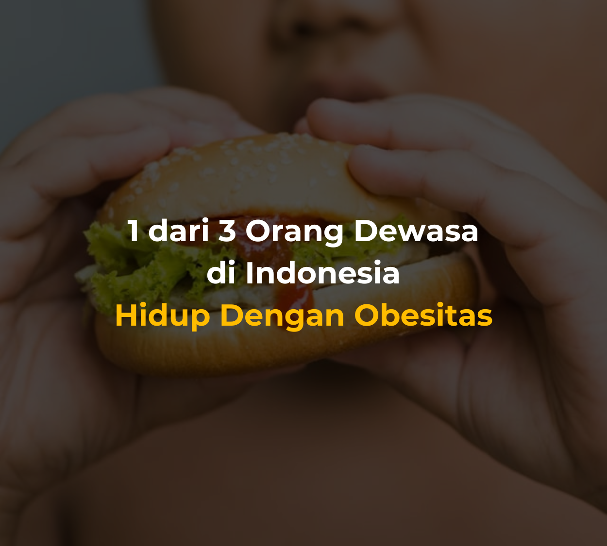
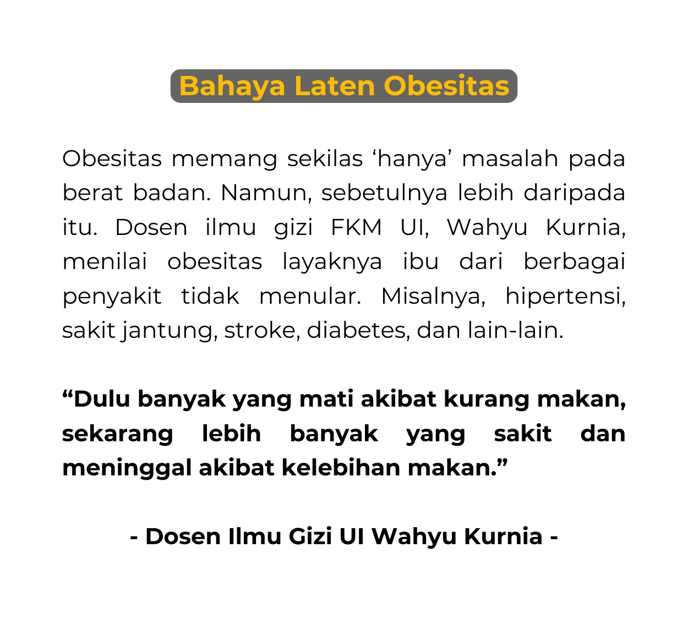
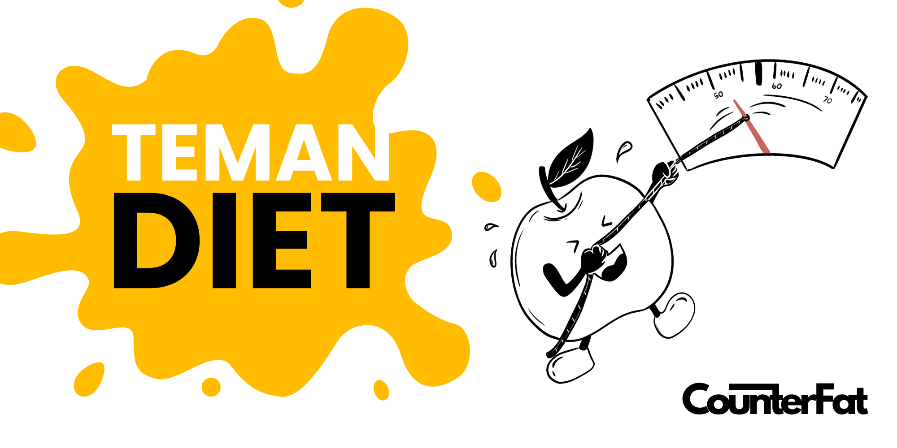
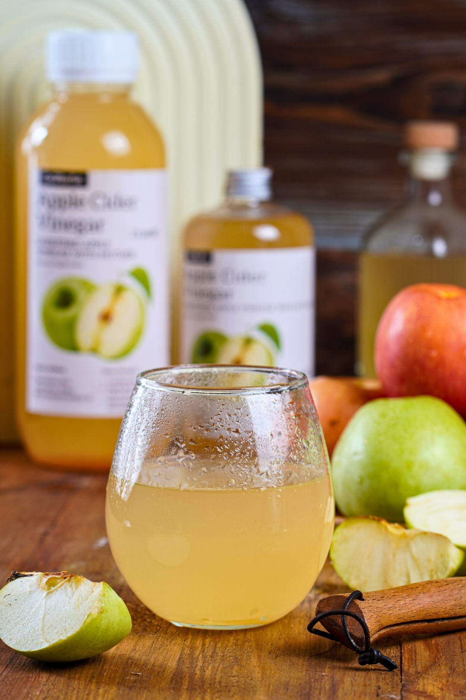
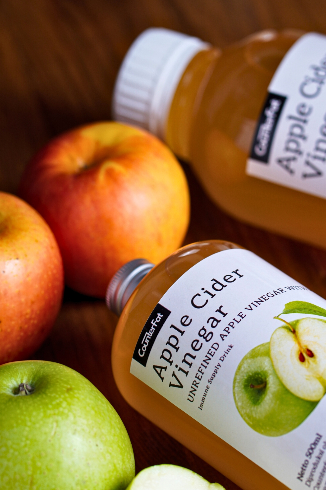

Data menunjukkan realita yang menantang di Indonesia. Namun, perjalanan kesehatan bukanlah tentang angka semata, melainkan tentang kenyamanan diri dan kualitas hidup.


Di perjalanan kesehatan Anda, setiap bantuan kecil sangat berarti. Counterfat hadir sebagai pendamping setia, diformulasikan untuk memberikan dukungan alami bagi pencernaan Anda dan membantu menjaga metabolisme tetap seimbang secara bertahap.

